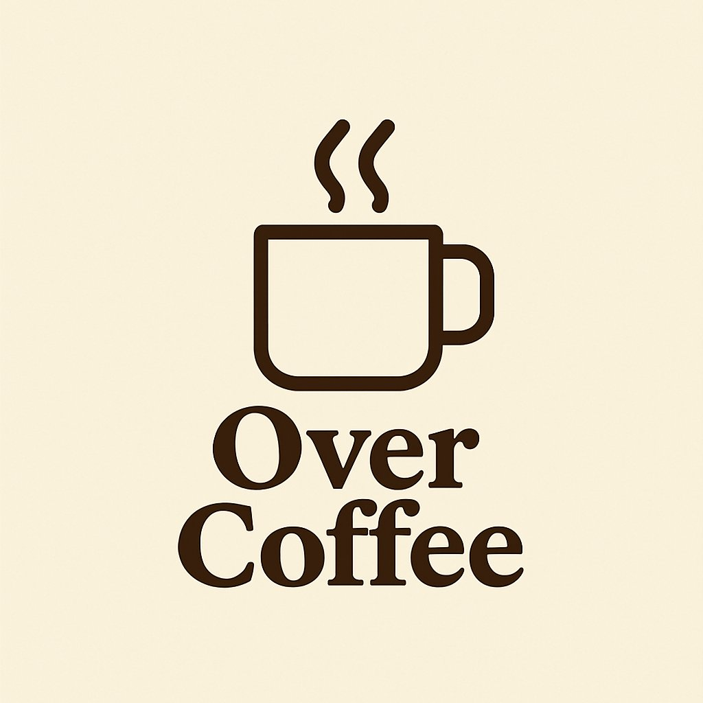

"In the winter, he curls up around a good book, and dreams away the cold." - Broken HomesAbout Me
Fordham University: Class of 2026, BS in Psychology/Computer Science
I'm a researcher at the intersection of Human Factors, Psychology, and Computer Science. My work focuses on understanding how humans perform in high-stakes, extreme environments - from isolation and confinement to human-AI interaction.
Currently, I'm investigating cognitive performance in solitude at Durham University's Solitude Lab and utilizing Signal Detection Theory to quantify human perception of AI-generated imagery. I bridge the gap between neurobiology and technical systems, building the software tools and interfaces needed to analyze human performance in real-time.
When I'm not in the lab: You'll find me playing piano, over a chessboard, reading, or writing about that shiny object with orange hues falling from the sky.
Currently seeking summer 2025 internships in UI/UX Research, Human Factors Engineering, and Human-Computer Interaction.
Human Factors in Extreme Environments, Cognitive Performance in Isolation, Human-AI Interaction, and Signal Detection Theory
Solitude & Confinement Psychology, AI-Generated Image Perception, Vigilance Monitoring, and Clinical Psychopathology
McKay, D., Arrindell, A. S. C. T., Lustig, S. M. C., & Savino, N. F. (2025). Pathways to Trypophobia: The Role of Obsessive-Compulsive Symptoms, Anxiety, and Disgust in Disease Avoidance Following Skin Infection. Poster in preparation.
Investigating human accuracy in distinguishing AI-generated images from real photographs using Signal Detection Theory (SDT) to quantify perceptual sensitivity and response bias.

An AI-driven mental reflection tool aimed at helping one find their purpose in life. Amassed over 100+ users within 48 hours of launch.
Visit SiteYour digitalized rolodex. Leverage your network without all the clutter. Stay tuned.
A dating app with no swiping or scrolling. The AI learns about you and delivers daily curated matches with short chemistry blurbs, then you jump straight into conversation.
An upcoming e-book. Information will be revealed at a later date!
Socials
My New Blog is Live! Please Feel Free to Check Out My Writings:
BLOG